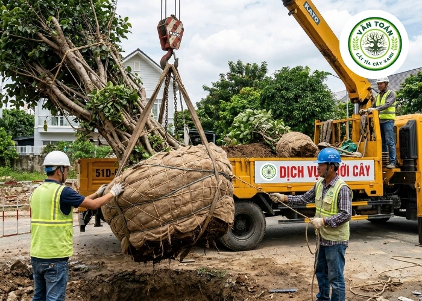
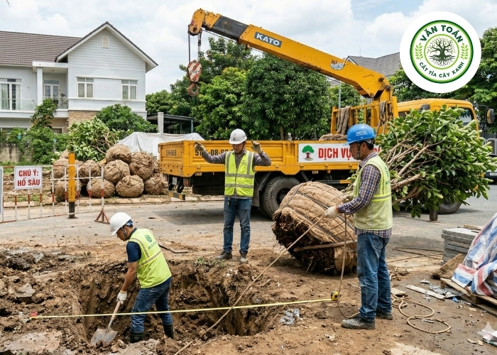

Dịch Vụ Di Dời Cây Xanh Chuyên Nghiệp, An Toàn Tại Cây Xanh Văn Toán
Cây xanh không chỉ mang lại vẻ đẹp cho không gian sống mà còn có vai trò quan trọng trong việc cải thiện chất lượng không khí. Tuy nhiên, trong những trường hợp cần thiết, việc di dời cây xanh trở nên cần thiết:
- Bạn cần giải phóng mặt bằng để xây dựng ngôi nhà mới?
- Khuôn viên công ty đang được cải tạo, mở rộng?
- Dự án thi công đường sá, công trình sắp triển khai?
- Muốn bố trí lại sân vườn nhưng không nỡ chặt bỏ cây lớn?
Tại Cây Xanh Văn Toán, chúng tôi cung cấp dịch vụ di dời cây xanh chuyên nghiệp, an toàn và hiệu quả.
Tại Sao Nên Chọn Dịch Vụ Của Chúng Tôi?
Đội Ngũ Chuyên Nghiệp
Kỹ thuật viên giàu kinh nghiệm, đào tạo bài bản.
Trang Thiết Bị Hiện Đại
Sử dụng thiết bị chuyên dụng đảm bảo nhanh chóng và an toàn.
Bảo Đảm An Toàn Cho Cây
Phương pháp di dời tiên tiến, giảm thiểu tổn thương tối đa.
Dịch Vụ Khách Hàng Tận Tâm
Hỗ trợ tư vấn 24/7.
Bảng Giá Tham Khảo
| LOẠI CÂY | KÍCH THƯỚC | GIÁ THAM KHẢO |
|---|---|---|
| Cây nhỏ | Dưới 5m | 800.000 - 1.500.000đ |
| Cây trung bình | 5-10m | 1.500.000 - 3.000.000đ |
| Cây lớn | 10-20m | 3.000.000 - 7.000.000đ |
| Cây cổ thụ | Trên 20m | Thỏa thuận |
Các Gói Dịch Vụ
- Di dời cây trọn gói
- Bứng cây chăm sóc tại vườn ươm
- Vận chuyển cây xanh nội thành – liên tỉnh
- Di dời cây công trình, khu công nghiệp
- Di dời cây cổ thụ, cây phong thủy
Hình Ảnh Thi Công Thực Tế



Quy Trình 5 Bước Chuyên Nghiệp
- Tiếp nhận yêu cầu & khảo sát thực tế
- Tư vấn phương án & báo giá
- Bứng cây chuyên nghiệp
- Vận chuyển an toàn
- Trồng lại & bảo hành
Liên hệ ngay hôm nay để giữ lại mảng xanh cho ngôi nhà của bạn!
Hotline: 098 467 5414